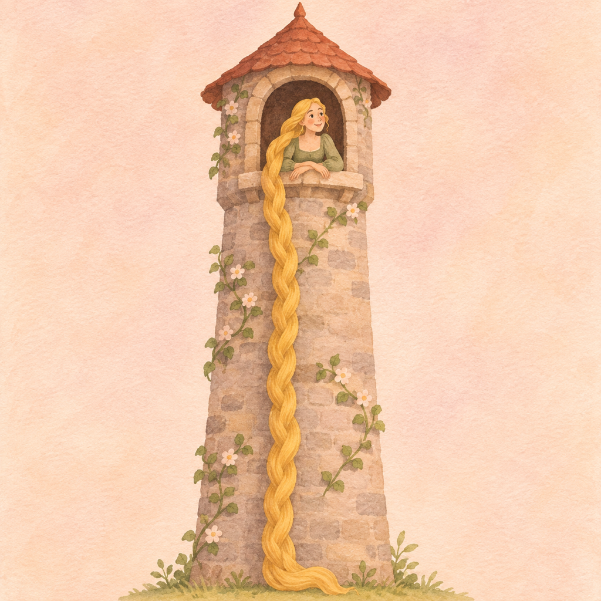

タイプ詳細

ラプンツェル
閉ざされた扉の前で、ふと新しい鍵を思いつく。出口がないなら、自分の手で作り出す発明家。
絹糸で出口を編む人
決められたルーティンに縛られても、頭の中ではいつも新しい扉の設計図を描いている人。日常の会話や何気ない景色から、誰も気づかないヒントを拾い集める。限られた材料しかなくても、組み合わせ次第で新しい道を作り出す。ただし、準備が整うまでは自室にこもりがち。完成した設計図を誰にも見せず、ひとりで納得してしまうことも。慎重さはあなたの武器だけれど、扉は開けなければ意味がない。ときには未完成の鍵でもいい。まずは外へ持ち出して、誰かの手に渡してみて。
月ゆめの家系


誰かが胸の奥にしまった願いを見つけ、自分だけの物語に変えていく人たち。野獣の城に隠された寂しさにも、塔の窓から外を見つめる少女の憧れにも気づける、繊細な心の持ち主。感じ取った想いを本の言葉や魔法の道具に変え、誰かの心に届く形を作り出す。ただし、相手の気持ちを考えすぎて、自分の物語がなかなか進まないことも。優しさは、思い描くだけでは届かない。心に浮かんだ願いをひとつ選び、小さな一歩から形にしていく家系。
長い金髪と塔CWSP
このタイプの4つの診断軸
タイプの方向（回答割合ではありません）
考えるより先に体が動き、自分から新しい一歩を踏み出すと心が弾む。
周囲の声や表情を敏感に受け止め、相手の求めることに応えると心が満たされる。
タイプの方向（回答割合ではありません）
目に見える変化や積み重ねた成果を確かめることで、迷いが消えて安心できる。
まだ知らない可能性や新しい発想に触れると、想像が広がり胸が高鳴る。
タイプの方向（回答割合ではありません）
物事の理由や筋道がつながると、納得して自分の答えを選べる。
誰かと本音を分かち合い、互いの気持ちが通じたときに心が落ち着く。
タイプの方向（回答割合ではありません）
目指す場所とそこへ進む順番が見えると、不安がほどけて安心できる。
決まりに縛られず、その場の発想で自由に動けると自分らしくいられる。
くわしく見る（診断軸）
タイプの方向を示しています。あなたの回答割合ではありません。
つよさ
- 塔の窓から見える限られた景色でも、想像力を広げて新しい道を描き出す知性
- 道端に落ちた小さな石や、誰かの何気ない言葉からも、計画のヒントを見つけ出す観察眼
- ひとりで本を読む静かな時間が、豊かな発想を育てる内省の力
気をつけたいところ
- 塔の鍵を磨きすぎて、扉を開けるタイミングを逃してしまう
- 自分の才能や計画を他人に預けすぎて、相手の返事ひとつで気持ちが揺れてしまう
恋愛の傾向
恋をすると、自分の生活ペースを乱されることを恐れながらも、相手の言葉に新しい扉の気配を感じて少しずつ心を開く人。相手の発言をひとつずつ受け止め、ふたりの未来を頭の中で何度も描き直す。安心できるまで相手の反応を確かめる慎重さ。ただし、シミュレーションばかり重ねると、目の前の相手の気持ちを見逃してしまう。未来の設計図も大切だけれど、今の相手の表情も見て。信頼できたなら、自分のほうから扉を開けてみて。
恋愛で気をつけたいところ
- 相手を自分の世界を変えてくれる救い手のように頼りすぎて、相手の気持ちを考えずに依存してしまう
- 不安になると塔の扉を閉ざし、相手からの連絡を遮って、自分の気持ちを試すような態度を取ってしまう
一緒にいると楽しい相手

三匹のこぶたの末っ子
レンガの確かさと絹糸の発想を持ち寄って、出口までの道筋を一緒につくれそう。
恋愛だとQRSPがレンガを積み上げるように着実に進むなら、あなたはその前に設計図を描く相棒。あなたが立てた緻密な計画を、相手は迷わず現実の行動へ変えていく。ただし、相手の速さに合わせようとして、自分の発想まで急がせないこと。設計図を描くあなたと、レンガを積む相手。互いの役割を信じ合えれば、まだ見ぬ城の扉も、ふたりで開くことができる組み合わせ。
くわしく見る（相性の見方）
動き出すきっかけと考え始めるところは違い、選ぶ基準と進め方は同じ。楽しみ方のたとえです。
くわしく見る（出典・根拠）
なぜ、このキャラ？
このキャラの元になった場面と、4つの軸への当てはめ方です。
- C
- きっかけに応じる王子の訪問をきっかけに塔の外を考える
- W
- 可能性から考える絹糸のはしごという出口を思い描く
- S
- 筋道を優先する持ち込める絹糸を脱出の手段にする
- P
- 見通しを立てる訪問のたびに絹糸を持ってきてと頼む
グリム「ラプンツェル」。絹糸で編むはしごを王子に提案する版の場面。
場面の読み方は、この診断のための解釈です。